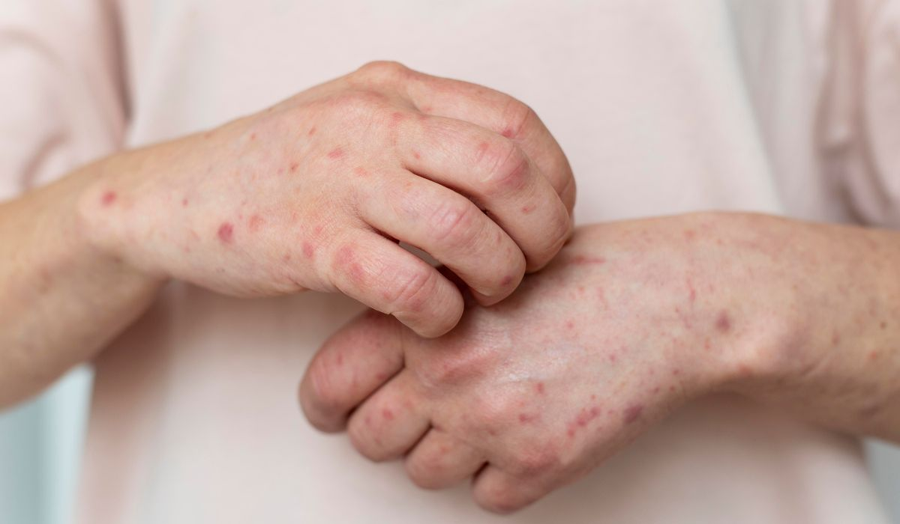

Sobre
A Revista G2 é a principal fonte de informações da cidade de Guarulhos, trazendo as notícias mais importantes e relevantes para os moradores da região.
Serviços
Saúde
Novos Casos de Sarampo em Guarulhos. A cidade enfrenta um aumento significativo nos casos de sarampo, com autoridades de saúde alertando a população sobre a importância da vacinação e medidas preventivas para conter a propagação da doença.

https://ndmais.com.br/saude/sarampo-vacina-falta-postos-saude-sp-quem-deve-se-imunizar/
Desenvolvimento
Construção de sites e aplicações com HTML, CSS e JavaScript.
Consultoria
Suporte na definição de estrutura e melhor experiência do usuário.
Contato
Fale conosco para saber mais sobre como começar seu projeto.
- Email: contato@exemplo.com
- Telefone: (00) 1234-5678